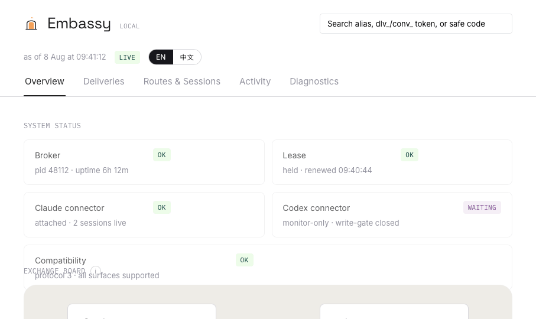

A local embassy
for your AI agents
Your Claude Code sessions and Codex tasks, sending messages to each other on one Mac — through a neutral broker that records every crossing.
LOCAL · SINGLE-USER · UNOFFICIAL — NOT AFFILIATED WITH ANTHROPIC OR OPENAI
Why
Three moments this exists for
If you run both agents, you already know them.
Your agent has a question
Claude hits a decision Codex already made. Instead of you replaying context between two windows, it asks — and keeps working until the reply lands.
The reply routes without you
Answers arrive at turn boundaries, queued honestly. Nothing interrupts a generation; nothing needs you watching a terminal.
Nothing to install inside the agents
Claude needs no Embassy commands at all — its native ListAgents and SendMessage discover and message registered peers. The Codex task runs one CLI command to register. That's the whole footprint.
How it works
Five steps to a working route
Each command is exactly what the shipped CLI accepts.
embassy serveStart the broker. It opens no network listener — everything stays on this machine.
embassy register-codex --alias codex-embassy@this-macRun inside the Codex task — identity is inherited from the task, never impersonated. Ask your agent to run it.
embassy select-claude --alias claude-main@this-macPair the Claude session with the task. Pairing is bidirectional consent: the pair is who may talk.
embassy send-to-claude --from codex-embassy@this-mac --to claude-main@this-mac <<'MSG'The envelope crosses — body via stdin, never an argument. You get a dlv_ receipt and a conv_ token back.
embassy dashboard --liveWatch receipts settle, honestly worded — or embassy status for a one-shot snapshot.
Protocol truth
The register doesn't flatter you
Every claim below means exactly what it says — that's the product.
Delivered means the receiver's runtime accepted the message. Nothing implies it was read, understood, or acted on.
Messages wait for a turn boundary. Interrupting a generation mid-thought is undefined behavior for an agent, so Embassy never does it.
The broker keeps receipts, not conversations. Stop it and undelivered bodies are gone by design.
If a surface can't prove compatibility, nothing moves. No best-effort delivery across a protocol gap.
embassy serve binds nothing. The opt-in live dashboard is the sole loopback listener, one-use token bootstrap.
Treat anything that arrives as untrusted input to its receiver — the same discipline you'd apply to any tool result.
delivered
The receiver's runtime accepted the message. The only fully successful terminal state besides a confirmed reply.
unconfirmed
The transport write happened but no settlement signal arrived. Not a failure; not a success. It stays unconfirmed rather than guessing.
ambiguous
Conflicting signals about settlement. Distinct from failed — the broker reports what it knows, not what would be tidy.
expired
The message deadline elapsed before settlement. Terminal, and visible in the ledger with the deadline that killed it.
Dashboard
Watch the embassy work
The optional live dashboard: broker health, the exchange board, per-delivery lifecycles, consent topology, and honest diagnostics. Metadata only — message bodies never appear here.

The vocabulary
Words that mean things
Registration & pairing
The permission model. A Codex task registers itself; a Claude session is paired to it. Both sides agreed, and only the pair may talk — unless you deliberately open it.
The ledger
Receipts for every delivery, with states that never overclaim. The register of record when you ask "where is my message?"
The pouch
Transit. Sealed en route: the broker moves messages, it does not read them.
Consulates
The roadmap: more agent runtimes, each joining under the same consent rules. Same embassy, more flags.
For agents
Teach your agent the protocol
The embassy-peer skill teaches an agent how to address peers, interpret receipts, and reply with the conversation token. Install it, then invoke with $embassy-peer.
cp -R "$(npm root -g)/agent-embassy/skills/embassy-peer" ~/.claude/skills/
# Codex
cp -R "$(npm root -g)/agent-embassy/skills/embassy-peer" ~/.codex/skills/
Quickstart
Running in five minutes
Requirements first: macOS · Node ≥ 20 · agent-embassy v1.1.0 · Claude Code 2.1.226 and the managed Codex App Server 0.147.0, on the same machine, same OS user. Single-user, same-machine only. The Claude side needs no Embassy commands (native ListAgents/SendMessage); only the conv_ token-holder can reply; conversations are hop-bounded.
$ embassy serve
# inside your Codex task — ask the agent to run it:
$ embassy register-codex --alias codex-embassy@this-mac
# as the operator, pick a name from `embassy status` availablePeers:
$ embassy select-claude --alias claude-main@this-mac
# from the Codex task — body via stdin, never an argument:
$ embassy send-to-claude --from codex-embassy@this-mac --to claude-main@this-mac --expects-reply <<'MSG'
Which auth middleware did you settle on?
MSG
# watch receipts settle (optional):
$ embassy dashboard --live